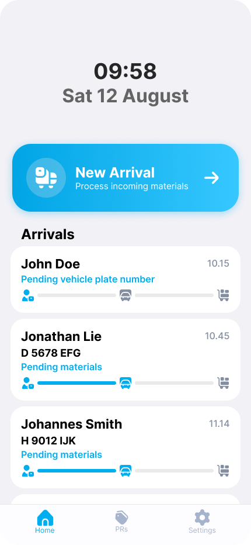
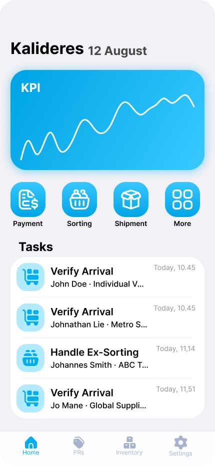
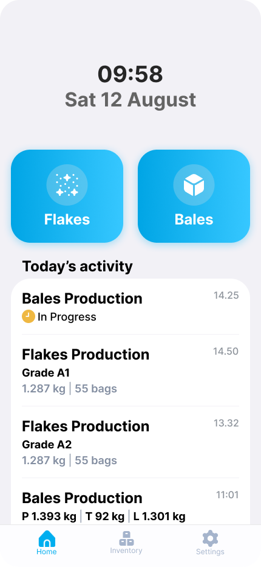
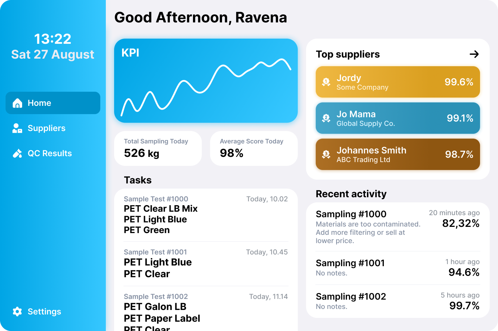

POP App
Paper-to-digital operations platform for Prevented Ocean Plastic — covering the full production chain from material intake through sampling, quality control, and shipment.
The Client
Prevented Ocean Plastic (POP) certifies and traces ocean-bound plastic through a supply chain — collecting material from suppliers, processing it through sorting, baling, and flaking, then sampling and shipping the output. Their operations were entirely paper-based. The task is to migrate every part of that chain to a digital system.
What It Does
The POP App gives each role in the chain a purpose-built view of their work. Field admins log incoming materials with photos and supplier details. Office admins verify arrivals, manage sorting, and issue payment receipts. Production leaders record bales and flakes output. Lab staff score samples and submit quality control results. Suppliers see their delivery history and environmental impact. Managers get a real-time dashboard across the whole operation.
Key Features
- Role-based app for field admins, office admins, production leaders, lab staff, and suppliers
- Full audit trail — identity, timestamp, GPS, reason, and field-level diffs for every data entry
- Bales production and quality control screens with material grading
- Site report generation and export to Excel, Google Sheets, and PDF
- Post-processing module: traceability QR scanning and API for downstream processors
- Supplier impact view showing plastic diverted from the ocean
Roadmap
- Phase 1 — Production: documentation, integrity & transparency, real-time monitoring, automated reports
- Phase 2 — Financial: advanced analytics, Accurate integration, bank API
- Phase 3 — HR: employee management, salary, attendance
Status
Phase 1 design complete across all screens including quality control, bales production, integrity & transparency, site reports, and post-processing. Currently in development. Not publicly available.



